댕겨왔습니다^^***
출발하기전에 날씨체크좀 하고갈걸;;;;
추워서 혼났어요;; 3일째는 눈도오고;;
영국 날씨 따닷해졌다고 좋아하고있었는데
그와중에 또 추운나라를 댕겨왔다능;;
우선 음식사진 방출^^
너무 배고파서 불쑥 들어간 카페
맛이 좀 특이했음
맛이 있다 없다가 아니라 좀 익숙하지 않은맛이랄까^^;
치즈케키랑 녹차
녹차 티백이 너무 예뻤당///
영국서는 뉴욕치즈케키 라던가 레어치즈케키 찾기가 넘 힘든데
여기 비슷한게(...;;) 보여서 낼름 주문
반가웠다//ㅅ//
원래 추워서 따닷한 커피한잔 사러 들어갔다가
저 종이각에 들어있는 커피음료가 넘 궁금해서
찬 음료 + 빵하나
이 빵도 생긴건 대따 달아보였는데 막상 먹으니까
의외로 달지도않고 좀 특이했당
전체적으로 이동네 음식이 나에게 익숙하지 않은 맛이 난달까^^;;;
이날도 날이 너무추웠는데 카페안에 난로 느므 반가웠음 ㅜㅜ
흑흑 행복해///
(나중에 확인해보니 평균 영하2~7도........OTL
가져간옷 다 껴입고 댕겼음;;;;)
내가 주문한건 왼쪽거
Beef goulash with Czech dumplings
Home made apple strudel with whipped cream and vanilla sauce
레몬티 한잔
(그나저나 나 혼자와서 주문했는데 왠빵을 저리;;;)
(그냥 괴기에 빵^^;;;)
Home made apple strudel with whipped cream and vanilla sauce
요거 맛나//
혼자서 좋아라~하고 메인메뉴에 디저트까지 해치우는 날
옆테이블의 6명정도 되어보이는 유럽아가씨들이 계속 쳐다봤다^^;;
내가 웃겨? 흑 ㅡㅜ
착실하게 딱풀까지 들고나와서 노트만들기에 열중^^;;
크림소스 파스타는 정기적으로 몸에 넣어줘야하는(...;;) 메뉴인데
이날것은 대 실패
맛없어 ㅜㅜ 베이컨만 골라먹고 거의 남겼다;;;
출발하기전에 날씨체크좀 하고갈걸;;;;
추워서 혼났어요;; 3일째는 눈도오고;;
영국 날씨 따닷해졌다고 좋아하고있었는데
그와중에 또 추운나라를 댕겨왔다능;;
우선 음식사진 방출^^
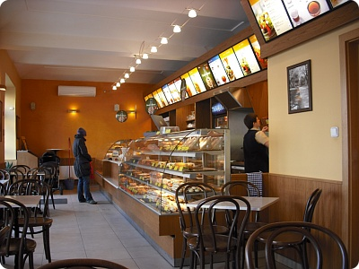
첫날 숙소에서 프라하성쪽으로 죽죽 걸어가다가너무 배고파서 불쑥 들어간 카페
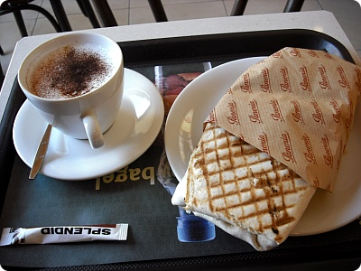
카푸치노랑 치킨.....저건 뭐였지??맛이 좀 특이했음
맛이 있다 없다가 아니라 좀 익숙하지 않은맛이랄까^^;
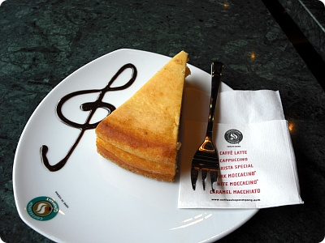
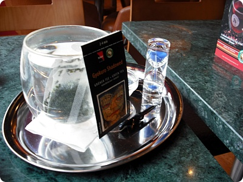
요게 첫째날 내 저녁치즈케키랑 녹차
녹차 티백이 너무 예뻤당///
영국서는 뉴욕치즈케키 라던가 레어치즈케키 찾기가 넘 힘든데
여기 비슷한게(...;;) 보여서 낼름 주문
반가웠다//ㅅ//
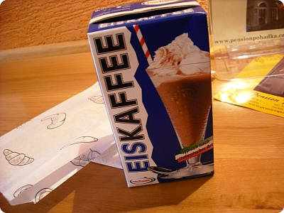
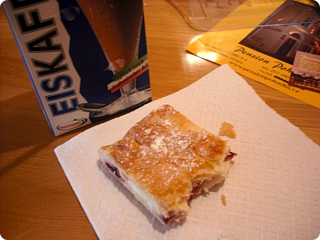
요건 프라하성 보고 내려오는 길에원래 추워서 따닷한 커피한잔 사러 들어갔다가
저 종이각에 들어있는 커피음료가 넘 궁금해서
찬 음료 + 빵하나
이 빵도 생긴건 대따 달아보였는데 막상 먹으니까
의외로 달지도않고 좀 특이했당
전체적으로 이동네 음식이 나에게 익숙하지 않은 맛이 난달까^^;;;
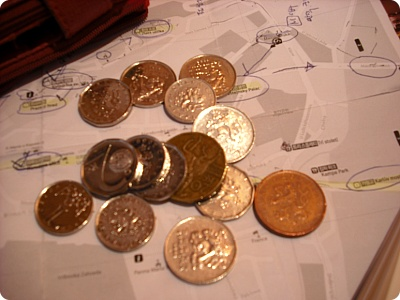
떠날때까지도 적응못했던 동전^^;;;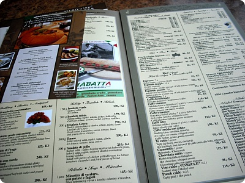
둘째날 점심은 우아하게 구시가광장이 보이는 카페에서 훗훗//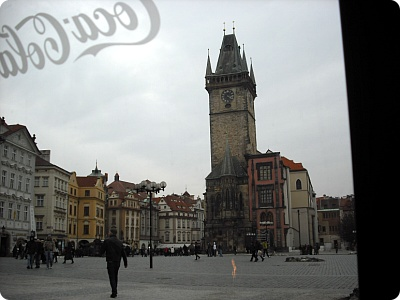
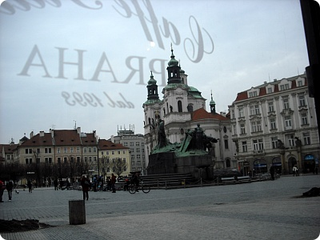
내가 앉은자리에서 구시가 광장이 한눈에보였당//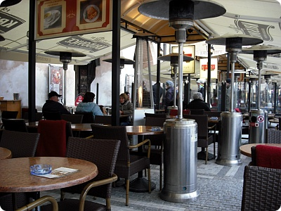
이날도 날이 너무추웠는데 카페안에 난로 느므 반가웠음 ㅜㅜ
흑흑 행복해///
(나중에 확인해보니 평균 영하2~7도........OTL
가져간옷 다 껴입고 댕겼음;;;;)
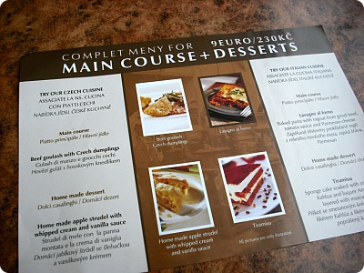
메인+디저트 메뉴가 있길래 주문내가 주문한건 왼쪽거
Beef goulash with Czech dumplings
Home made apple strudel with whipped cream and vanilla sauce
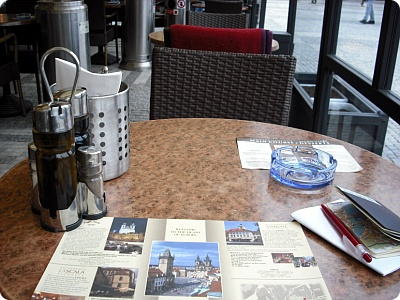
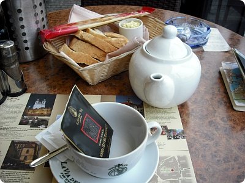
레몬티 한잔
(그나저나 나 혼자와서 주문했는데 왠빵을 저리;;;)
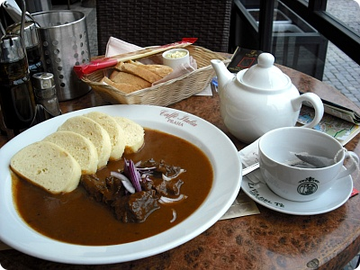
요거이 Beef goulash with Czech dumplings(그냥 괴기에 빵^^;;;)
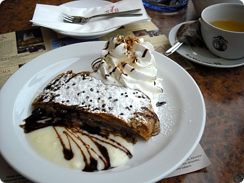
그리고 디저트//ㅅ//Home made apple strudel with whipped cream and vanilla sauce
요거 맛나//
혼자서 좋아라~하고 메인메뉴에 디저트까지 해치우는 날
옆테이블의 6명정도 되어보이는 유럽아가씨들이 계속 쳐다봤다^^;;
내가 웃겨? 흑 ㅡㅜ
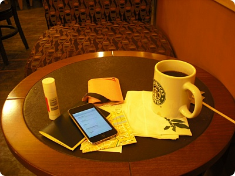
스타벅스는 들려주는게 예의(퍽)착실하게 딱풀까지 들고나와서 노트만들기에 열중^^;;
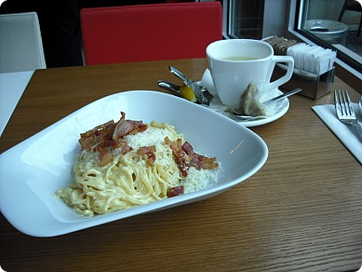
요건 셋째날 점심크림소스 파스타는 정기적으로 몸에 넣어줘야하는(...;;) 메뉴인데
이날것은 대 실패
맛없어 ㅜㅜ 베이컨만 골라먹고 거의 남겼다;;;
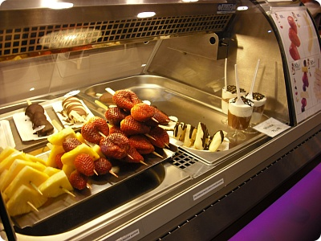
쪼코박물관이 있어 또 낼름^^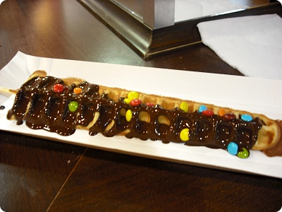
와플에 초코 - 다크/밀크/화이트 - 중 선택해서 주문
나는 다크쪼코 선택
요 바로 맞은편 부스에서는 사탕만드는 과정을 보여주고있었는데
사람들이 몰려서 구경하고 사진찍는 와중에도 열심히 이걸
뜯어먹고 있으니까 어떤 할머니께서 웃으면서 (나를)사진좀
찍어도 되냐고 하셔서;;;; 당연히 거절했다;;
3월이고 비성수기라 동양인이 지극히 레어였고;;
2,3월은 서유럽이나 유럽쪽 고딩을 수학여행 시즌이라
관광지 가는곳곳마다 요것들이 날 사진을 찍었고;;;
내가 웃겨? 흑 ㅡㅜ
골목골목 누비는 맛이 있는 동네더군요//
덕분에 너무많이 걸어댕겨서;;; 삭신이 쑤십니다요ㅡㅜ
(몸에서 마구 나에게 외치는 소리가 들렸음;;
"야~너 왜이래;; 왜 안하던짓 하고 그래;;" 라고;;;..OTL)
3일 잘 댕겨왔습니다^^//
여행후기는 네이버블로그에 투비컨티뉴뉴뉴뉴~
(우선 오늘은 종일 방에서 골골거릴테야;;;)
+여행후기 추가
2010.03.10~03.12...체코-프라하...①
2010.03.10~03.12...체코-프라하...②
나는 다크쪼코 선택
요 바로 맞은편 부스에서는 사탕만드는 과정을 보여주고있었는데
사람들이 몰려서 구경하고 사진찍는 와중에도 열심히 이걸
뜯어먹고 있으니까 어떤 할머니께서 웃으면서 (나를)사진좀
찍어도 되냐고 하셔서;;;; 당연히 거절했다;;
3월이고 비성수기라 동양인이 지극히 레어였고;;
2,3월은 서유럽이나 유럽쪽 고딩을 수학여행 시즌이라
관광지 가는곳곳마다 요것들이 날 사진을 찍었고;;;
내가 웃겨? 흑 ㅡㅜ
골목골목 누비는 맛이 있는 동네더군요//
덕분에 너무많이 걸어댕겨서;;; 삭신이 쑤십니다요ㅡㅜ
(몸에서 마구 나에게 외치는 소리가 들렸음;;
"야~너 왜이래;; 왜 안하던짓 하고 그래;;" 라고;;;..OTL)
3일 잘 댕겨왔습니다^^//
여행후기는 네이버블로그에 투비컨티뉴뉴뉴뉴~
(우선 오늘은 종일 방에서 골골거릴테야;;;)
+여행후기 추가
2010.03.10~03.12...체코-프라하...①
2010.03.10~03.12...체코-프라하...②